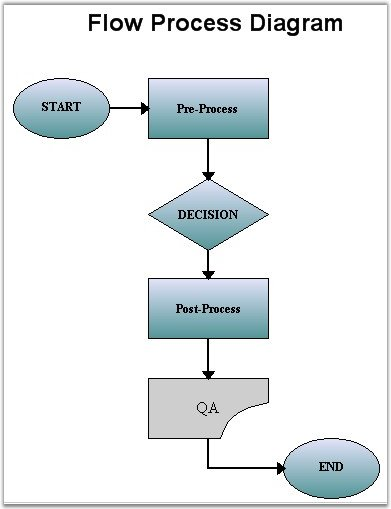

Diagram symbols can be created by loading symbols from an Essential Diagram Palette (EDP) file and viewing them using the DiagramWebControl. The node to be added from the palette and its respective location should be specified. The nodes to be connected and the connector to be used with the desired decorators should also be defined.
The following code snippet can be deployed for creating diagrams with symbols loaded from the symbol palette.
|
[C#]
protected void Page_Load(object sender, EventArgs e) { if (this.IsPostBack == false) { CreateFlowDiagram(); // Enable the diagram for node selection and drag-drop this.DiagramWebControl1.EnableNodeSelection = true; this.DiagramWebControl1.EnableDragDrop = true; } this.DiagramWebControl1.RenderImageMap = true;
}
private void CreateFlowDiagram() { string palettepath = Server.MapPath(String.Empty); palettepath = palettepath + @"\App_Data\FlowDiagramSymbols.edp"; SymbolPalette palette = this.LoadPalette(palettepath);
// Add a TextNode to highlight the subnode feature string text = "Flow Process Diagram"; MeasureUnits units = MeasureUnits.Pixel; Syncfusion.Windows.Forms.Diagram.TextNode txtnode = new TextNode(text); txtnode.FontStyle.Size = 18; txtnode.FontStyle.Bold = true; txtnode.FontStyle.Family = "Arial"; txtnode.FontColorStyle.Color = Color.Black; txtnode.LineStyle.LineColor = Color.Transparent; // for update size. txtnode.Text = text; txtnode.SizeToText(new SizeF(500, 500)); ((IUnitIndependent)txtnode).SetPinPoint(new PointF(285, 30), units); this.DiagramWebControl1.Model.AppendChild(txtnode);
AddNode(palette, "Start", new PointF(50, 100)); AddNode(palette, "Process", new PointF(185, 100)); AddNode(palette, "Decision", new PointF(185, 200)); AddNode(palette, "Document", new PointF(185, 400)); AddNode(palette, "End", new PointF(320, 460));
Node node = GetPaletteNode(palette, "Process"); node = (Node)node.Clone(); ((PathNode)node).Labels[0].Text = "Post-Process"; AppendNodeToDocument(node, new PointF(185, 300));
ConnectNodes(GetModelNode("Start"), GetModelNode("Process")); ConnectNodes(GetModelNode("Process"), GetModelNode("Decision")); ConnectNodes(GetModelNode("Decision"), node); ConnectNodes(node, GetModelNode("Document")); ConnectNodes(GetModelNode("Document"), GetModelNode("End")); }
private void ConnectNodes(Node node1, Node node2) { if (node1 == null) throw new ArgumentNullException("node1"); if (node2 == null) throw new ArgumentNullException("node2");
// enable center port node1.EnableCentralPort = true; node2.EnableCentralPort = true;
// create connector LineConnector conn = new LineConnector(new PointF(1, 1), new PointF(2, 2));
// set decorator Decorator decor = conn.HeadDecorator; decor.DecoratorShape = DecoratorShape.FilledFancyArrow; decor.FillStyle.Color = Color.Black;
this.DiagramWebControl1.Model.AppendChild(conn); // connect head end point EndPoint endPoint = conn.TailEndPoint; node1.CentralPort.TryConnect(endPoint); // connect tail end point endPoint = conn.HeadEndPoint; node2.CentralPort.TryConnect(endPoint); }
private void AddNode(SymbolPalette palette, string strNodeName, PointF ptLocation) { if (palette == null) throw new ArgumentNullException("palette"); if (strNodeName == null) throw new ArgumentNullException("strNodeName");
Node nodeTemp = GetPaletteNode(palette, strNodeName);
if (nodeTemp != null) { AppendNodeToDocument(nodeTemp, ptLocation); } }
private void AppendNodeToDocument(Node node, PointF ptLocation) { if (node == null) throw new ArgumentNullException("node");
SizeF szPinOffset = ((IUnitIndependent)node).GetPinPointOffset(MeasureUnits.Pixel); ((IUnitIndependent)node).SetPinPoint(new PointF(ptLocation.X + szPinOffset.Width, ptLocation.Y + szPinOffset.Height), MeasureUnits.Pixel); this.DiagramWebControl1.Model.AppendChild(node); } // Get the SymbolPalette by deserializing the SymbolPalette file public SymbolPalette LoadPalette(string filename) { SymbolPalette curSymbolPalette = null; FileStream iStream = new FileStream(filename, FileMode.Open, FileAccess.Read);
if (iStream != null) { IFormatter formatter = new BinaryFormatter(); try { AppDomain.CurrentDomain.AssemblyResolve += new ResolveEventHandler(Syncfusion.DiagramBaseAssembly.AssemblyResolver); curSymbolPalette = (SymbolPalette)formatter.Deserialize(iStream); } catch (SerializationException) { try { formatter = new SoapFormatter(); iStream.Position = 0; curSymbolPalette = (SymbolPalette)formatter.Deserialize(iStream); } catch (Exception e) { System.Diagnostics.Trace.WriteLine("Error reading SymbolPalette", e.Message); } } finally { iStream.Close(); } }
return curSymbolPalette; } public Node GetModelNode(string strNodeName) { if (strNodeName == null) throw new ArgumentNullException("strNodeName");
Node nodeToReturn = null; Model model = this.DiagramWebControl1.Model;
if (model != null) { foreach (Node node in model.Nodes) { if (node.Name == strNodeName) { nodeToReturn = node; break; } } }
return nodeToReturn; }
// Get the SymbolModel from the SymbolPalette public Node GetPaletteNode(SymbolPalette palette, string symbolName) { if (palette == null) throw new ArgumentNullException("palette");
if (symbolName == null) throw new ArgumentNullException("symbolName");
Node nodeToReturn = null;
foreach (Node node in palette.Nodes) { if (node.Name == symbolName) { nodeToReturn = node; break; } }
return nodeToReturn; } |
|
[VB.NET]
Protected Sub Page_Load(ByVal sender As Object, ByVal e As EventArgs) If Me.IsPostBack = False Then CreateFlowDiagram() ' Enable the diagram for node selection and drag-drop Me.DiagramWebControl1.EnableNodeSelection = True Me.DiagramWebControl1.EnableDragDrop = True End If Me.DiagramWebControl1.RenderImageMap = True
End Sub
Private Sub CreateFlowDiagram() Dim palettepath As String = Server.MapPath(String.Empty) palettepath = palettepath & "\App_Data\FlowDiagramSymbols.edp" Dim palette As Syncfusion.Windows.Forms.Diagram.SymbolPalette = Me.LoadPalette(palettepath)
' Add a TextNode to highlight the subnode feature Dim text As String = "Flow Process Diagram" Dim units As Syncfusion.Windows.Forms.Diagram.MeasureUnits = MeasureUnits.Pixel Dim txtnode As Syncfusion.Windows.Forms.Diagram.TextNode = New Syncfusion.Windows.Forms.Diagram.TextNode(text) txtnode.FontStyle.Size = 18 txtnode.FontStyle.Bold = True txtnode.FontStyle.Family = "Arial" txtnode.FontColorStyle.Color = Color.Black txtnode.LineStyle.LineColor = Color.Transparent ' for update size. txtnode.Text = text txtnode.SizeToText(New SizeF(500, 500)) CType(txtnode, Syncfusion.Windows.Forms.Diagram.IUnitIndependent).SetPinPoint(New PointF(285, 30), units) Me.DiagramWebControl1.Model.AppendChild(txtnode)
AddNode(palette, "Start", New PointF(50, 100)) AddNode(palette, "Process", New PointF(185, 100)) AddNode(palette, "Decision", New PointF(185, 200)) AddNode(palette, "Document", New PointF(185, 400)) AddNode(palette, "End", New PointF(320, 460))
Dim node As Syncfusion.Windows.Forms.Diagram.Node = GetPaletteNode(palette, "Process") node = CType(node.Clone(), Syncfusion.Windows.Forms.Diagram.Node) CType(node, Syncfusion.Windows.Forms.Diagram.PathNode).Labels(0).Text = "Post-Process" AppendNodeToDocument(node, New PointF(185, 300))
ConnectNodes(GetModelNode("Start"), GetModelNode("Process")) ConnectNodes(GetModelNode("Process"), GetModelNode("Decision")) ConnectNodes(GetModelNode("Decision"), node) ConnectNodes(node, GetModelNode("Document")) ConnectNodes(GetModelNode("Document"), GetModelNode("End")) End Sub
Private Sub ConnectNodes(ByVal node1 As Syncfusion.Windows.Forms.Diagram.Node, ByVal node2 As Syncfusion.Windows.Forms.Diagram.Node) If node1 Is Nothing Then Throw New ArgumentNullException("node1") End If If node2 Is Nothing Then Throw New ArgumentNullException("node2") End If
' enable center port node1.EnableCentralPort = True node2.EnableCentralPort = True
' create connector Dim conn As Syncfusion.Windows.Forms.Diagram.LineConnector = New Syncfusion.Windows.Forms.Diagram.LineConnector(New PointF(1, 1), New PointF(2, 2))
' set decorator Dim decor As Syncfusion.Windows.Forms.Diagram.Decorator = conn.HeadDecorator decor.DecoratorShape = DecoratorShape.FilledFancyArrow decor.FillStyle.Color = Color.Black
Me.DiagramWebControl1.Model.AppendChild(conn) ' connect head end point Dim endPoint As Net.EndPoint = conn.TailEndPoint node1.CentralPort.TryConnect(endPoint) ' connect tail end point endPoint = conn.HeadEndPoint node2.CentralPort.TryConnect(endPoint) End Sub
Private Sub AddNode(ByVal palette As Syncfusion.Windows.Forms.Diagram.SymbolPalette, ByVal strNodeName As String, ByVal ptLocation As PointF) If palette Is Nothing Then Throw New ArgumentNullException("palette") End If If strNodeName Is Nothing Then Throw New ArgumentNullException("strNodeName") End If
Dim nodeTemp As Syncfusion.Windows.Forms.Diagram.Node = GetPaletteNode(palette, strNodeName)
If Not nodeTemp Is Nothing Then AppendNodeToDocument(nodeTemp, ptLocation) End If End Sub Private Sub AppendNodeToDocument(ByVal node As Syncfusion.Windows.Forms.Diagram.Node, ByVal ptLocation As PointF) If node Is Nothing Then Throw New ArgumentNullException("node") End If
Dim szPinOffset As SizeF = (CType(node, Syncfusion.Windows.Forms.Diagram.IUnitIndependent)).GetPinPointOffset(MeasureUnits.Pixel) CType(node, Syncfusion.Windows.Forms.Diagram.IUnitIndependent).SetPinPoint(New PointF(ptLocation.X + szPinOffset.Width, ptLocation.Y + szPinOffset.Height), MeasureUnits.Pixel) Me.DiagramWebControl1.Model.AppendChild(node) End Sub ' Get the SymbolPalette by deserializing the SymbolPalette file Public Function LoadPalette(ByVal filename As String) As Syncfusion.Windows.Forms.Diagram.SymbolPalette Dim curSymbolPalette As Syncfusion.Windows.Forms.Diagram.SymbolPalette = Nothing Dim iStream As IO.FileStream = New IO.FileStream(filename, FileMode.Open, FileAccess.Read)
If Not iStream Is Nothing Then Dim formatter As Runtime.Serialization.IFormatter = New Runtime.Serialization.Formatters.Binary.BinaryFormatter() Try AddHandler AppDomain.CurrentDomain.AssemblyResolve, AddressOf Syncfusion.DiagramBaseAssembly.AssemblyResolver curSymbolPalette = CType(formatter.Deserialize(iStream), Syncfusion.Windows.Forms.Diagram.SymbolPalette) Catch e1 As Runtime.Serialization.SerializationException Try formatter = New Runtime.Serialization.Formatters.Soap.SoapFormatter() iStream.Position = 0 curSymbolPalette = CType(formatter.Deserialize(iStream), Syncfusion.Windows.Forms.Diagram.SymbolPalette) Catch e As Exception System.Diagnostics.Trace.WriteLine("Error reading SymbolPalette", e.Message) End Try Finally iStream.Close() End Try End If
Return curSymbolPalette End Function Public Function GetModelNode(ByVal strNodeName As String) As Syncfusion.Windows.Forms.Diagram.Node If strNodeName Is Nothing Then Throw New ArgumentNullException("strNodeName") End If
Dim nodeToReturn As Syncfusion.Windows.Forms.Diagram.Node = Nothing Dim model As Syncfusion.Windows.Forms.Diagram.Model = Me.DiagramWebControl1.Model
If Not model Is Nothing Then For Each node As Syncfusion.Windows.Forms.Diagram.Node In model.Nodes If node.Name = strNodeName Then nodeToReturn = node Exit For End If Next node End If
Return nodeToReturn End Function ' Get the SymbolModel from the SymbolPalette Public Function GetPaletteNode(ByVal palette As Syncfusion.Windows.Forms.Diagram.SymbolPalette, ByVal symbolName As String) As Syncfusion.Windows.Forms.Diagram.Node If palette Is Nothing Then Throw New ArgumentNullException("palette") End If
If symbolName Is Nothing Then Throw New ArgumentNullException("symbolName") End If
Dim nodeToReturn As Syncfusion.Windows.Forms.Diagram.Node = Nothing
For Each node As Syncfusion.Windows.Forms.Diagram.Node In palette.Nodes If node.Name = symbolName Then nodeToReturn = node Exit For End If Next node
Return nodeToReturn End Function |

Figure 74: Flow Process Diagram
 Note: The Flow diagram sample renders a
flow diagram with symbols from EDP files. The sample is available in the below
path.
Note: The Flow diagram sample renders a
flow diagram with symbols from EDP files. The sample is available in the below
path.
<Install Location>\Syncfusion\EssentialStudio\Version Number\Web\diagram.web\Samples\2.0\Getting Started\FlowDiagram